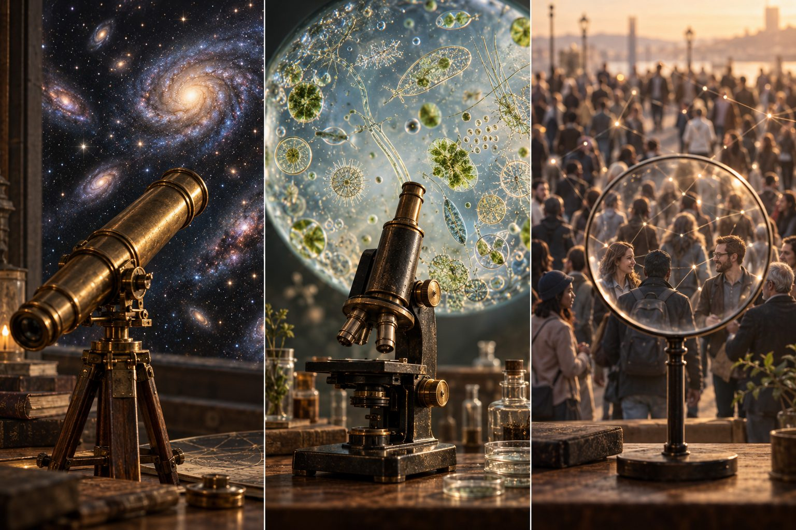
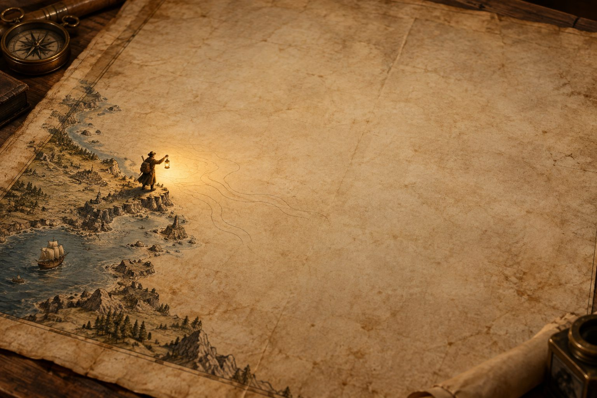
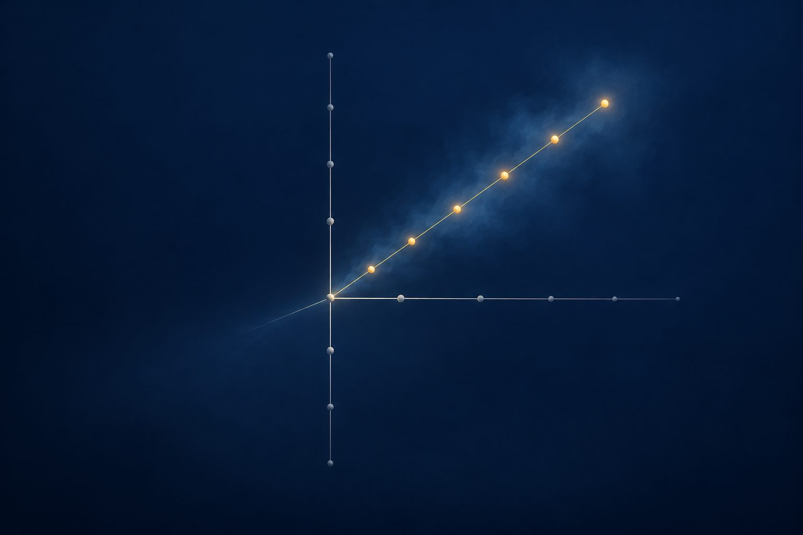

Somebody, once, decided how tall you are. They stood you against a wall and made a mark, and everyone believed the mark.
Now look at this man.
The marks on his chart stop at his shoulders. Whoever made it never thought about heads. And the little lamp on the floor only lights his legs, so his legs are the part anyone can see.
He is not a short man. He is a man being measured by a short ruler.
People have always done this. Long ago, doctors said you were made of four juices, because juices were what a doctor could see. Later, people read your character from the bumps on your skull, because they had hands and you had a skull. Today we say clever, kind, brave, funny, patient. Those words are real, and they are useful.
They are also just the marks that fit on our chart.
Here is the whole of a person.
The little white peak above the water is the part with names. Clever. Kind. Brave. That is what a school report can reach, and a job form, and most of the things anyone will ever say about you.
Everything under the water is you as well.
Nobody knows how much is down there. Maybe dozens of abilities with no names. Maybe thousands. Things you do so easily that you have never once thought of them as things you do.
Lightning cracked over the world for millions of years before anyone knew the word electricity. The word arrived late. The lightning was always there.
What has no name is hard to see. That is all. It is not hard to have.
So why did we miss so much?
Three reasons, and none of them is that people were stupid.
The first: our words for people came from gossip. They were invented by neighbours talking over a fence about other neighbours. If an ability only shows itself after thirty years, no neighbour ever needed a word for it, so no word was ever made.
The second: nobody can watch a whole life. Look at the woman in the dark room. Her light reaches one small circle at a time, and the thing standing in that circle is herself, when she was small. Not even she has ever seen her own whole life laid out at once.
The third: we can only hold a few ideas in our head at the same time. Three. Maybe five. Perhaps a person needs a thousand.
The room was never empty. We only had a flashlight.

Every time people built a better instrument, the world turned out to be bigger than they thought.
Someone polished glass and pointed it at the sky, and the sky was not a ceiling with lights in it. It was galaxies.
Someone polished glass and pointed it at a drop of pond water, and the drop was not water. It was a city.
Now there is a third lens, and it is new, and it is pointed at us.
Here is the honest thing about it. It is not cleverer than you. It cannot do anything you could not do. But it has read almost everything people ever wrote down about their own lives, and it does not forget, and it can hold a hundred thousand whole lives side by side and ask one question: is there something all these people share that nobody ever gave a name?
The telescope did not make the galaxies. It just meant somebody finally looked.

This is the map we have of people. Look how small the drawn part is.
The blank middle is not empty. It is undrawn.
Here is the clever trick with maps, and a man called Mendeleev found it. He made a table of everything the world is made of, and he left holes in it on purpose, and he wrote next to a hole: something belongs here, and it will be a soft grey metal, go and find it. Years later, somebody found it. The hole knew first.
A map of people could have holes like that. And if you stand at the edge with a lantern, you can already guess at five shapes out there in the dark.
Window sense. Some people always arrive at the right moment, again and again, in different jobs, in different countries. Not lucky. They can feel when a thing is ready to be pushed. Grown-ups may call this kairotic sensitivity.
Carrying. Some people can hold a question that has no answer for ten years without slamming it shut. Darwin carried his for twenty. Semantic load-bearing capacity.
Weather. Some people walk into a room and the room goes calm, and they have not said a word yet. Resonance transfer.
Road-making. Some people can turn everything that went wrong in their life into a road that leads somewhere. Others drag it behind them like loose gravel. Retroactive integration.
In-between sight. Some people see the thing that fits in none of the boxes, the bit that everyone else's eyes slide straight past. Interstitial perception.
You probably know someone for at least one of these. That is the whole point. They are real enough to recognise, and still nobody has ever tested for a single one of them.
A map of people could be used in two ways, and we should be honest about both.
On the left is the sorting machine. It measures everyone in exactly the same way and drops each person into the right bin, best at the top, worst at the bottom, and once you are in your bin you stay there. We already have small versions of this. If we ever built a really good map, somebody would want to build a really good sorting machine out of it, and that would be the worst thing we ever made.
On the right is the other way. Same people. Nobody in a bin. A lens hangs above them, and what it shows is not who is tallest. It shows where each person actually stands, and which people light up when they are put next to each other.
Because almost nothing big is built by one person alone. It is built by a strange pair. The one who feels the right moment, and the one who never stops grinding. Alone, both of them are difficult. Together, they are unstoppable.
A ruler tells you who is biggest. A map tells you what can be built from here.
Now the sad part, and it is worth saying out loud.
Everything we use to check on people is a sieve. Tests are sieves. Report cards are sieves. Job forms are sieves. Each one has a grid with holes of one particular shape, and whatever does not match the shape falls straight through.
Look at what is falling. It is not dust.
Somewhere there is a person who is average at every single thing anyone has ever measured, and extraordinary at something nobody has ever measured, not once, not anywhere. And every school, every form, every test they ever met told them the same thing: you are average.
They were not average. The holes were the wrong shape.
That gold is lying on the ground under the sieve right now, in almost every country, in enormous quantities. It is probably the biggest thing we have ever wasted, and we wasted it by accident, just by not looking.

Here is how you can tell that a new ability is really there.
Draw the two lines we already have and put everyone on them. Most people land near the lines, and that is fine. But some dots end up far out in the corner where nothing explains them. Scientists call those dots noise. Noise means: we do not know, so let us pretend they are mistakes.
Now draw one new line through them. If the strange dots suddenly sit neatly along it, they were never mistakes. They were a thing we had no line for.
This is where the strangest stories live. The mother who wakes up in the night at the exact moment something happens to her child. The doctor who says "I do not like this patient" a week before any machine agrees. The sailor who will not go out today and cannot tell you why.
We have two usual answers. Either it is magic, or it is nonsense.
There may be a third. A person takes in far more than they can explain: a smell, a shake in someone's voice, twenty years of quiet noticing. All of that can arrive as a feeling with no reasoning attached, like a message from somewhere else, when really it came from inside.
Lightning was the anger of gods until it was electricity. Illness was a curse until it was germs. The word we use for a thing we cannot measure yet is usually a magic word.
Be careful here, though. This is exactly the corner of the world where tricksters make their living. Anyone who tells you they have found your hidden gift, and asks for money, is a trickster. Which is why we need the next page.
An idea does not get to be true because it sounds beautiful. It has to walk down this corridor.
The first gate: is it always there? The same ability has to show up in the same person next year, and the year after, and in different places. If it happens once, that was a good day, not an ability.
The second gate: can anybody else see it? It has to be findable by someone who was not told the story, using something other than the story.
The third gate: is it actually new? If it turns out to be cleverness in a hat, or patience in a hat, it goes back out. Old things with new names do not get in.
The fourth gate: does it work everywhere? It has to be recognisable in Antwerp and in Lagos and in Osaka. If it only exists in one country, it was a custom, not a capacity.
Look at the floor near the entrance. All those dimmer spheres are ideas that did not get through, and most ideas will not, including most of the five from the map.
That is not the plan going wrong. That is the plan working. Anything that lets every idea through is not a science. It is a horoscope.
And beyond the last gate is the square, with real daylight in it, where a thing that survived all four gates finally belongs to everybody.
Watch the one who is stepping through.
The ring of light lines up with the door for one moment only. The others are a half step early or a half step late, and they are not worse people, and they are trying just as hard.
We are standing at a door like that now. We have built the lens. We have not written the rules.
So before anyone draws a single map of a single person, three promises, and they are not negotiable.
The map belongs to the person it is a map of. Not to a school, not to a company, not to a government. Yours.
No sorting. Nobody may ever use it to decide who gets the job, the loan, the place, the chance.
Every map says so on itself: this may be wrong. Every map carries a date and a confession, because one day people will laugh at ours the way we laugh at the bumps on the skull. If a map can never be redrawn, it stops being a map and becomes a cage.
Rules first, map second. That order is the whole thing. Do it the other way round and you get the grey machine.
For years we told ourselves a story about building something cleverer than us, that would stand next to us, or above us, or in front of us.
Perhaps we were reading it backwards. Perhaps what we built was a lamp.
And the thing the lamp is pointed at is us.
Somewhere in you is something that has no name. It does not mind waiting. It has been there the whole time.